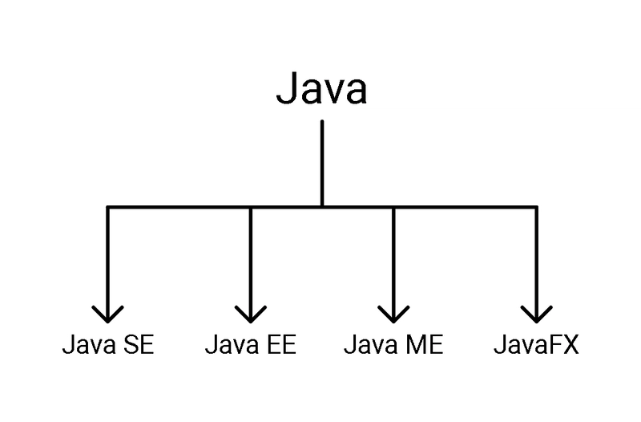
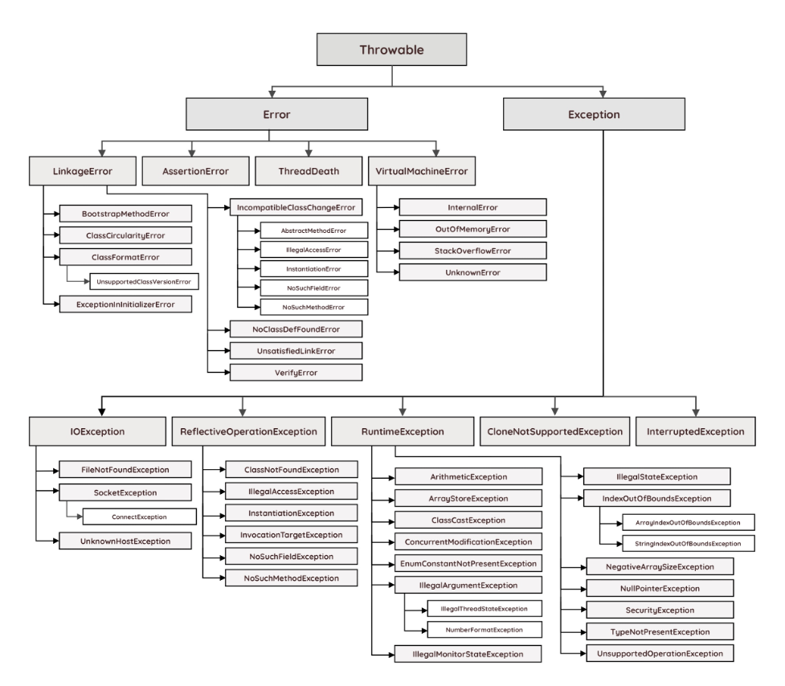
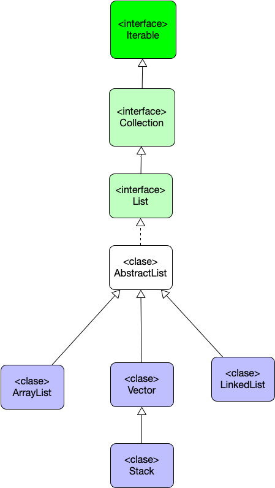

Tu navegador no soporta las características requeridas por impress.js, así que se muestra una versión simplificada de esta presentación.
Para una mejor experiencia, por favor utiliza la última versión de Chrome, Safari o Firefox.
Javascript es el lenguaje
Angular es un framework y dicta el tono de como vamos a usar js
Proxy object
Reflect
Generadores
Simbolos
Map y set
WeakMap y WeakSet
Iteradores
Rxjs y zone js
Uso de anotaciones
Formularios Reactivos (tipados)
Signals
Componentes (standalone)
api propia de animaciones
Modulos, Servicios, Directivas

Java Platform, Standard Edition (Java SE)
Java Platform, Enterprise Edition (Java EE)
Java Platform, Micro Edition (Java ME)
JavaFX
Referencia a la imagen: Alexander Souza blog
Java es el lenguaje
springboot es un framework y dicta el tono de como vamos a usar java
Colecciones
Lambdas y interfaces funcionales
Streams API
Optional
CompletableFuture / concurrency mejorada
JPMS / Módulos (Module System)
Text Blocks
Records, Pattern Matching y Sealed Classes
Starters
Embedded servers (Tomcat, Jetty, Undertow)
Opinionated defaults
Spring Boot Actuator, metricas
Externalized configuration
Spring Data y soporte de persistencia
Integración con el ecosistema Spring — seguridad, mensajería, cloudm testing y extensibilidad.
public class MathUtil {
// Java es tipado y le gusta saber si una función puede lanzar una excepción (no es mandatorio)
public static int add(int a, int b) throws IllegalArgumentException {
if (a < 0 || b < 0) {
throw new IllegalArgumentException("Los argumentos deben ser positivos");
}
return a + b;
}
// java tiene mas 100 tipos distintos de excepciones
public static double divide(double a, double b) throws ArithmeticException {
if (b == 0) throw new ArithmeticException("No se puede dividir por cero");
return a / b;
}
}
La excepción mas famosa "NullPointerException" (del millon de dolares)


package com.arquitecturajava;
import java.util.Map;
import java.util.List;
public class Principal2 {
public static void main(String[] args) {
Iterable lista = List.of("hola", "que", "tal", "estas");
lista.forEach(System.out::println);
Map mapa = Map.of(1, "ordenador", 2, "Tablet");
mapa.forEach((clave, valor) -> System.out.println(clave + ":" + valor));
}
}
public class Example {
public static int sum() {
List nums = Arrays.asList(1,2,3,4,5);
int sum = nums.stream()
.filter(n -> n % 2 == 1)
.mapToInt(Integer::intValue)
.sum();
return sum;
}
}
Items on the slide can
Fly in
Fade in
And zoom in
...just like in PowerPoint. Yeah, I know I'm being lame, but it was fun to learn to do this in CSS3.
This step here doesn't introduce anything new when it comes to data attributes, but you should notice in the demo that some words of this text are being animated. It's a very basic CSS transition that is applied to the elements when this step element is reached.
At the very beginning of the presentation all step elements are given the class of `future`. It means that they haven't been visited yet.
When the presentation moves to given step `future` is changed to `present` class name. That's how animation on this step works - text moves when the step has `present` class.
Finally when the step is left the `present` class is removed from the element and `past` class is added.
So basically every step element has one of three classes: `future`, `present` and `past`. Only one current step has the `present` class.
This step zoom in to left bottom of previous slide to see to small text.
It's a empty and transparent.
data-rel-reset is used to prevent this step from inheriting the relative positioning from previous slide.
This version of impress.js includes several add-ons, striving to make this a full featured presentation app.
The previous step breaks the slide flow, changes the relative position and rotation.
This slide use data-rel-to to inherit relative position and rotation from the slide before previous slide.